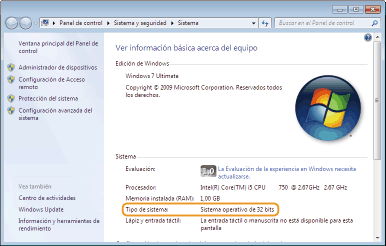

[Iniciar]

0KUC-010
Windows XP Professional/Server 2003
[Iniciar] seleccione [Impresoras y faxes].
seleccione [Impresoras y faxes].
[Iniciar]
Windows XP Home Edition
[Iniciar] seleccione [Panel de control] [Impresoras y otro hardware] [Impresoras y faxes].
[Iniciar]
Windows Vista
[Iniciar] seleccione [Panel de control] [Impresora].
[Iniciar]
Windows 7/Server 2008 R2
[Iniciar] seleccione [Dispositivos e impresoras].
[Iniciar]
Windows 8/Server 2012
Haga clic con el botón derecho en la esquina inferior izquierda de la pantalla seleccione [Panel de control] [Ver dispositivos e impresoras].
Haga clic con el botón derecho en la esquina inferior izquierda de la pantalla
Windows Server 2008
[Iniciar] seleccione [Panel de control] haga doble clic en [Impresoras].
[Iniciar]
Si utiliza Windows Vista/7/8/Server 2008/Server 2012, active [Detección de redes] para ver los ordenadores de su red.
Windows Vista
[Iniciar] seleccione [Panel de control] [Ver estado y tareas de red] en [Detección de redes], seleccione [Activar detección de redes].
[Iniciar]
Windows 7/Server 2008 R2
[Iniciar] seleccione [Panel de control] [Ver estado y tareas de red] [Cambiar configuración de uso compartido avanzado] en [Detección de redes], seleccione [Activar detección de redes].
[Iniciar]
Windows 8/Server 2012
Haga clic con el botón derecho en la esquina inferior izquierda de la pantalla seleccione [Panel de control] [Ver estado y tareas de red] [Cambiar configuración de uso compartido avanzado] en [Detección de redes], seleccione [Activar detección de redes].
Haga clic con el botón derecho en la esquina inferior izquierda de la pantalla
Windows Server 2008
[Iniciar] seleccione [Panel de control] haga doble clic en [Centro de redes y recursos compartidos] en [Detección de redes], seleccione [Activar detección de redes].
[Iniciar]
Si en su ordenador no aparece la pantalla [Programa de instalación del CD-ROM/DVD-ROM] después de introducir el CD-ROM/DVD-ROM, siga el procedimiento que se indica a continuación. El siguiente ejemplo utiliza "D:" como nombre de unidad del CD-ROM/DVD-ROM. El nombre de la unidad del CD-ROM/DVD-ROM puede ser distinta en su ordenador.
Windows XP/Server 2003
[Iniciar] seleccione [Ejecutar] introduzca "D:\MInst.exe" haga clic en [Aceptar].
[Iniciar]
Windows Vista/7/Server 2008
[Iniciar] introduzca "D:\MInst.exe" en [Buscar programas y archivos] o [Iniciar búsqueda] pulse la tecla [ENTRAR] del teclado.
[Iniciar]
Windows 8/Server 2012
Haga clic con el botón derecho en la esquina inferior izquierda de la pantalla seleccione [Ejecutar] introduzca "D:\MInst.exe" haga clic en [Aceptar].
Haga clic con el botón derecho en la esquina inferior izquierda de la pantalla
Si no está seguro de si su ordenador utiliza Windows de 32 o de 64 bits, siga el procedimiento que se indica a continuación.
1
Visualice [Panel de control].
Windows Vista/7/Server 2008
[Iniciar] seleccione [Panel de control].
[Iniciar]
Windows 8/Server 2012
Haga clic con el botón derecho en la esquina inferior izquierda de la pantalla seleccione [Panel de control].
Haga clic con el botón derecho en la esquina inferior izquierda de la pantalla
2
Visualice [Sistema].
Windows Vista/7/8/Server 2008 R2/Server 2012
Haga clic en [Sistema y seguridad] o [Sistema y mantenimiento] [Sistema].
Haga clic en [Sistema y seguridad] o [Sistema y mantenimiento]
Windows Server 2008
Haga doble clic en [Sistema].
Haga doble clic en [Sistema].
3
Consulte la arquitectura de bits.
Para sistemas operativos de 32 bits
Aparecerá [Sistema operativo de 32 bits].
Aparecerá [Sistema operativo de 32 bits].
Para sistemas operativos de 64 bits
Aparecerá [Sistema operativo de 64 bits].
Aparecerá [Sistema operativo de 64 bits].

Windows XP/Server 2003
[Iniciar] [Panel de control] seleccione [Agregar o quitar programas].
[Iniciar]
Windows Vista/7/Server 2008 R2
[Iniciar] [Panel de control] seleccione [Desinstalar un programa].
[Iniciar]
Windows 8/Server 2012
Haga clic con el botón derecho en la esquina inferior izquierda de la pantalla [Panel de control] seleccione [Desinstalar un programa].
Haga clic con el botón derecho en la esquina inferior izquierda de la pantalla
Windows Server 2008
[Iniciar] seleccione [Panel de control] haga doble clic en [Programas y características].
[Iniciar]
Windows XP
[Iniciar] [Panel de control] [Rendimiento y mantenimiento] [Sistema] [Hardware] seleccione [Administrador de dispositivos].
[Iniciar]
Windows Vista/7/Server 2008 R2
[Iniciar] [Panel de control] [Hardware y sonido] o [Hardware] seleccione [Administrador de dispositivos].
[Iniciar]
Windows 8/Server 2012
Haga clic con el botón derecho en la esquina inferior izquierda de la pantalla [Panel de control] [Hardware y sonido] seleccione [Administrador de dispositivos].
Haga clic con el botón derecho en la esquina inferior izquierda de la pantalla
Windows Server 2003
[Iniciar] [Panel de control] [Sistema] [Hardware] seleccione [Administrador de dispositivos].
[Iniciar]
Windows Server 2008
[Iniciar] seleccione [Panel de control] haga doble clic en [Administrador de dispositivos].
[Iniciar]